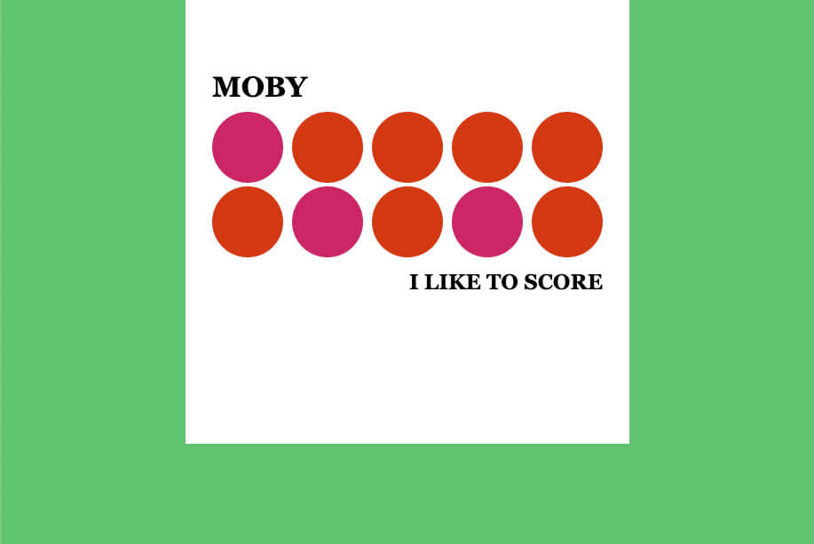
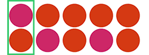
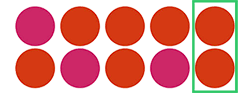

Pour cet exercice, vous devez écrire du CSS afin de recréer l’album I Like to Score de Moby.
Aperçu du résultat 👇
Couleurs 🎨
À ce stade-ci, les cercles ne devraient pas tous être en mesure de s'afficher les uns à côté des autres, du a des marges excédentaires. Créez une seule règle CSS utilisant une pseudo-classes afin de sélectionner les 2 cercles les plus à gauche ⬅️ et retirer leur marge de gauche (une seule règle devrait impacter les 2 cercles).
 Créez une une 2e règle CSS utilisant une pseudo-classe afin de sélectionner les 2 cercles les plus à droite ➡️ et retirez leur marge de droite (une seule règle devrait impacter les 2 cercles).
 Utiliser les pseudo-classes afin de sélectionner les cercles 1, 7 et 9 et changer leur couleur de fond afin qu'ils soient rouge cerise.
Border
border, border-radius